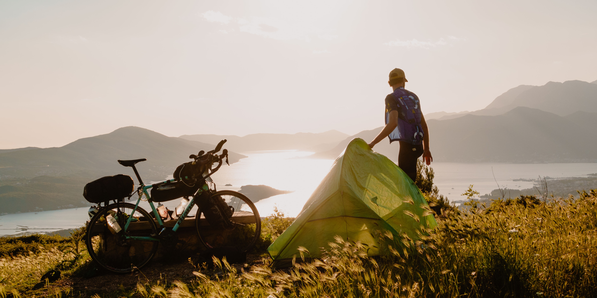
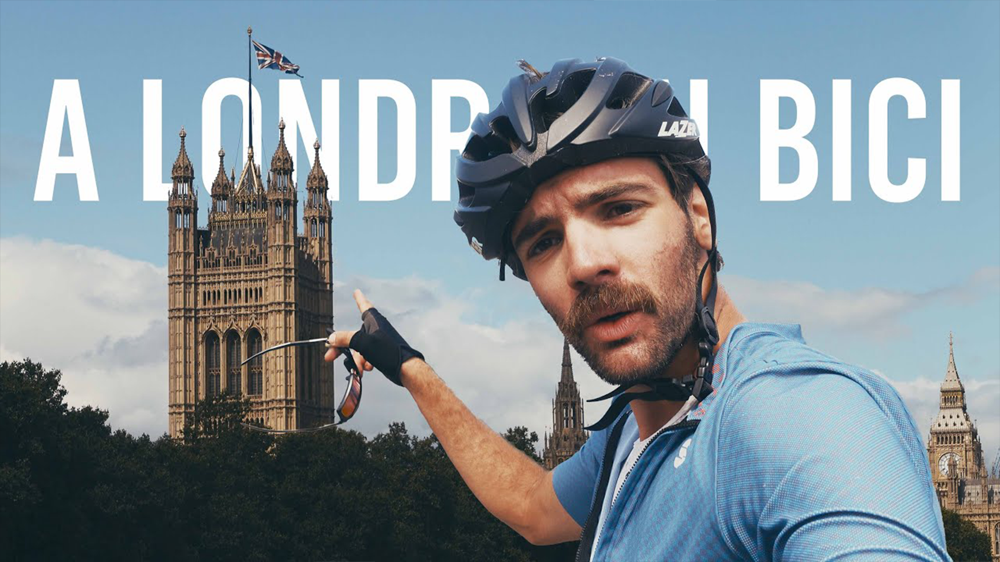
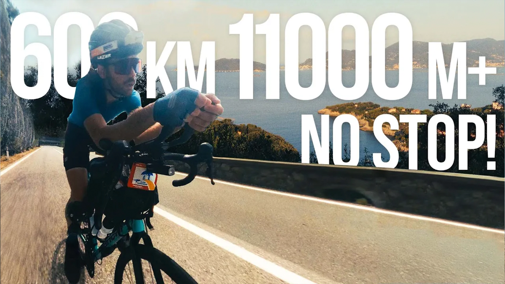
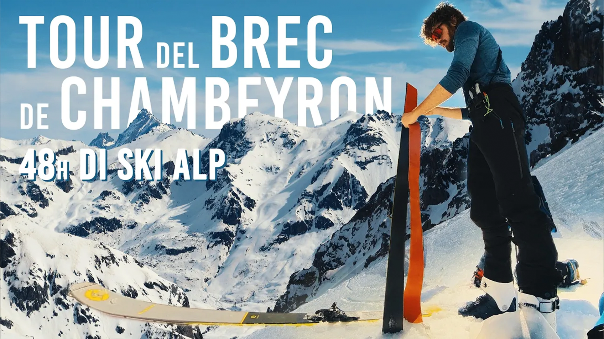

C'è una consapevolezza che solo un viaggio in bicicletta sa restituire: il senso di appartenenza ad un mondo in cui siamo ospiti, e non padroni. In questo documentario ho voluto raccontare il mio viaggio da casa fino al cuore di Londra. Dal Colle dell’Agnello alla pioggia della Loira, tra Parigi e la Normandia, 1700km in solitaria con una bici di 25kg.

Oltre al viaggio, amo vivere la bicicletta in un’altra condizione estrema: quella dell’Ultra Cycling. In questo video affronto la Super Randonnée dei Monti Liguri di Levante 600km e 11000 m di dislivello in 57 ore. Cosa mi spinge? Forse la ricerca di una risposta che non esiste, o forse solo la voglia di spingersi oltre.

Lo sci alpinismo è sicuramente il modo migliore per godere della bellezza selvaggia dell’alta quota d’inverno. In questo video racconto due giorni intensi, in compagnia del CAI Saluzzo, tra Valle Maira e Francia, che ci hanno portato a raggiungere la cima di Tete de la Frema, a 3.151 metri.